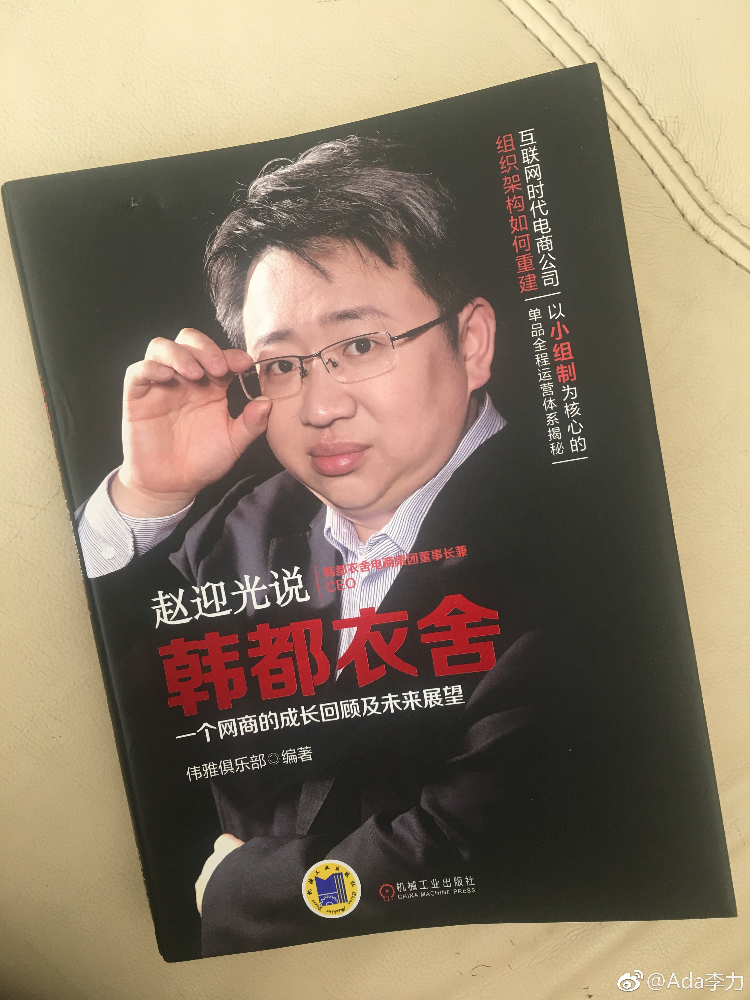

#读书#《赵迎光说韩都衣舍》这本书是2015年出版的。2008年成立的韩都衣舍，从年销售额300万，跃升到2014年的15亿。赵迎光的目标是2020年达到100亿。所以，我很好奇最近两年的销售数据，2017年是18亿，增长速度可以说是惨淡。公开信息看到韩都衣舍从新三板摘牌，准备创业板IPO看来看去，韩都衣舍没有自己真正的的护城河。之前的成功，更多是时代红利造成的，比如无线红利，淘品牌红利等。当然，能抓住这些红利，亦是相当牛了。只是接下来，如果还是按照以往路径，很难走得更高了。